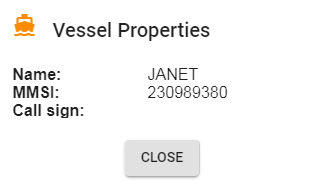
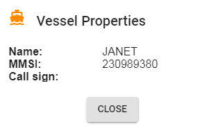

Introduction
Freeboard is an Openlayers based chart plotter that uses
Signal K communication protocols and Signal K server features
to provide the following functionality:
- Moving Vessel / Map display with vessel Heading / Bearing and True Wind / Apparent Wind lines.
- Charts: display including both online and locally hosted.
- Resources: List and filter Routes, Waypoints, Notes and Regions.
- Add / Edit / Delete resources
- Set active route
- Import resources from GPX files.
-
Alarms / Notifications:
Displays both visual and audible notifications.
- Anchor Watch
- Depth
- Crossing Vessel / Closest Approach
- Instrument Panel: allows you to select from the apps installed on your Signal K server for display.
- Other Vessels: display other vessels on map.
- History Playback: replay timeseries data from the Signal K server.
Visit us at GitHub
Signal K Server
Freeboard is a "stateless" application which can be used concurrently at multiple stations
to both display and send back information to the Signal K server.
Therefore Freeboard requires that the host Signal K server be able to service requests
to the following paths for all functionality to be available:
- resources/routes, resources/waypoints, resources/notes, resources/regions - Serve resources as well as accept and persist resource data submitted to these paths.
- resources/charts - Serve chart resources.
- navigation/anchor, notifications/navigation/anchor - Serve and accept `position`, `maxRadius` values as well as calculate `currentRadius` and serve notifications.
- notifications/environment/depth - Serve notifications for belowKeel, belowSurface and belowTransducer.
- notifications/navigation.closestApproach .
- Standard Alarms - Serve notifications for notifications/mob, notifications/sinking, notifications/piracy, etc.
- navigation/courseGreatCircle/activeRoute
- navigation/courseGreatCircle/nextPoint/position -
Serve and accept these values to allow
a route to be set as active and / or waypoint
to be set as a destnation.
It is expected that the server will initiate any subsequent calculations and related value updates.
Node Server Plug-ins:
When using Signal K node server you will need to install plug-ins to provide the required server functionality.
Following is a list of recommended plugins that will enable the required server functionality:
Display
Freeboard provides a moving Vessel / Map display for both your vessel
 and other vessels
and other vessels  .
.

The menu bar along the left of the screen provides access to functions and
menus that allow you control the map display.
Note: this option is disabled when vessel position is not available.
- Show / Hide Vessels
- Clear / Refresh Vessel Trail: When trail is available from the server selecting this menu item will reload the trail from the server.
- Show / Hide / Clear Course Data
- Clear Active Route

Note:The Add Note here" option is only available at zoom levels where Notes are visible on the map.
The default instruments shown are @signalk/instrumentpanel
Use the Settings screen to:
Vessel: displays the current position and heading of your vessel.
Note: Vessel icon is not displayed when vessel position is not available.
Additionally, Heading, Bearing True Wind Direction and Apparent Wind Angle
lines are displayed with the vessel when the related data is available.

|
|
Heading |
|
|
bearing |
|
|
True Wind |
|
|
Apparent Wind |
Active Vessel: displays the current position and heading
for a vessel for which
an update has been received in the last 6 mins.
 Inactive Vessel: displays the last received position and heading
for a vessel for which
an update has NOT been received for more than 6 mins.
Inactive Vessel: displays the last received position and heading
for a vessel for which
an update has NOT been received for more than 6 mins.
Note: Vessels are removed from display after there has been no
update received for 9 mins or more.
Clicking on a vessel icon will display an information window
containing vessel data and available actions.

 

Navigation
Freeboard will display course data in either the navigation.courseGreatCircle or navigation.courseRhumbline paths when received from the server.
You can set a destination in the following ways:
- Activate a Route: Once activaed select a point along the route.
- Go To Waypoint: Select a waypoint as a destination.
- Navigate to here:
Right click anywhere on the map and select the option from the menu.
To display course data when it is available from the server,
click more_horiz and
select Show Course Data.

If the server stops sending course data, the last received values
will remain on the screen.
To hide the course data display until the next set of data is
received, click more_horiz and
select Clear Course Data from the menu.
To view / change settings such as Arrival Circle click the
settings button to display
the Course Settings screen.

- A waypoint card in the Waypoint List

- The pop-up displayed when a waypoint is clicked.

Resources
Freeboard provides functionality for in-built Signal K resource types: routes, waypoints, charts, notes and regions .


Note: Deleting a route will also delete the associated Start and End Waypoints!
The start of the route is set as the current destination.
Use the Previous and Next point options in the more_horiz menu to select the destination point.
Note: If points of the Active Route have been re-ordered then you will not be able to set the destination point until changes have been applied.
Note: A waypoint may be associated with a route. so take care when deleting waypoints!
Additionally, you can click on both Routes and Waypoints to display an information window with available actions.


Freeboard uses specfic key / value pairs that are defined within the
properties: {} block of a note:
Example:
properties: {
draft: true,
readOnly: false
}

Local Charts hosted on the Signal K server are identified with the map icon.
Charts are displayed in descending order of scale to ensure more detailed charts are on top.
Draw Menu

streetviewLoad from GPX

After selecting the resources click Load Selected to load the resources onto the Signal K server.
Anchor Watch


warning Alarms & Notifications
Freeboard will display Notifications and also provides the ability to raise alarms.
Notifications are displayed using:
The following Alarms can be raised:
To RAISE an alarm:
Freeboard will display the received alarm from the server. This alarm can be Acknowledged and / or Muted.
To CANCEL an alarm:
NOTIFICATIONS:
Freeboard displays the following Notifications:

Vessels
Freeboard displays vessels with the following icons:

Freeboard provides the ability to de-clutter the screen of vessels in the following ways:
Additionally, a wind vector will be displayed for vessels where the data is available.
This vector will only be displayed at higher zoom levels so as to reduce screen clutter.
You can select whether to use either True or Apparent wind data for displaying the vector.
This choce can be made in the Settings screen.
To Show / Hide the Vessels Map Layer:
- visibility Show Vessels
- visibility_off Hide Vessels
To Select Vessels:
Note: Actions may fail if the Signal K server does not support PUTs to paths other than `vessels/self`
Note:If the Vessels layer is hidden selections made in this screen will not be displayed until the Vessels layer is made visible.
Playback History
Freeboard provides the ability to request historical data playback
from the server.
Note: Selecting this option from the menu disconnects the realtime stream.
Note: Playback history must be supported by the server.
- Context: to choose vessel(s) data. self or all
- Start Date: Date of playback stream start
- Start Time:Time of playback stream start
- Playback Rate: Rate of playback. 1= real-time, 5= 5 x real-time
Click Cancel to re-start the real-time data stream.
Once started, Playback Mode is identified by the addition of the cancel button to the menu bar.
settings Settings
The Settings screen is where you can configure Freeboard and it consists of the following sections:
DISPLAY:
This section provides choices about how information is displayed.

- Instrument Panel App:
Select from a list of installed applications the one you wish to
be displayed in the Instrument Panel.
Note: The application selected should be responsive to display correctly within the space afforded by the instrument panel. - Parameters: Enter parameters that will be appended to the Instrument App url.
- Halt App on hide:
When checked the selected Intrument Panel App will be stopped when the Panel
is hidden.
To save resources on your device when the instrument panel is hidden clear this checkbox. - Favourites:
Use this to display a list of Web Apps installed on the Signal K Server
which can then be selected as a Favourite.
These selected Web App can be "switched in" for display in the Instrument Panel. - Show DEPTH Alarm Messages: Check this box if you want received DEPTH notifications from the Signal K server to be displayed as an alarm message.
- Alarm Smoothing Time: Once the DEPTH alarm message has been acknowledged and the notification state has returned to Normal, this is the length of time that the notification must remain in Normal state before the alarm is re-triggered.
- Display Vessel Trail:
Check this box if you want to display the vessel trail.
By default Freeboard will display the vessel trail using a local cache maintaining up to 5000 points at a 5 second interval.-
Get Trail from Server: Check this to retrieve
vessel trail data from the server at the path
signalk/v1/api/self/track.
-
Use the slider to set the length of track to retrieve from the server
in hours. Time is relative to the current time.
Freeboard will attempt to retrieve track from the server in the following way:- time < (now - 24hrs) => 5 minute intervals.
- (now - 1hr) < time > (now - 24hrs) => 1 minute intervals.
- time > (now - 1hr) => 5 second intervals.
-
Get Trail from Server: Check this to retrieve
vessel trail data from the server at the path
signalk/v1/api/self/track.
- Dark Mode Setting:
Use this setting to control the display theme (Light or Dark).
-
Use OS Setting - Selecting this option tells Freeboard follow the
preferred display mode set by the hosting system.
Note: This uses the prefers-color-scheme CSS media setting, if the browser does not support this feature then the Light theme is selected. - Use Signal K Mode - Set the display mode using the value of the environment.mode path. Dark theme is used when value is "night".
- On - Turn Dark Mode on.
-
Use OS Setting - Selecting this option tells Freeboard follow the
preferred display mode set by the hosting system.
UNITS & VALUES:
This section provides choices about the units and values used when displaying data.

Distance Units:
Kilometres / Nautical Miles
Depth Units:
Metres / Feet
Preferred Paths:
Click this button to display show a list of available source paths for
specific values i.e. Heading, Wind Speed, etc.

Select the path from which you want the value used for the specfic vessel attribute.
Click Save to ensure your selections are applied.
Note: The paths available will depend on the data stream received from the
Signal K server.
Prefer True / Magnetic values: True / Magnetic
Instructs Freeboard to use either the True or Magnetic value path for
paths that are not listed in Preferred Paths.
(Defaults to True)
Note: If the selected path type is not within the received data
stream NO value will be displayed. Freeboard will NOT fallback to other available
path values!
OTHER VESSELS:
This section provides choices about the units and values used when displaying data.

Wind Vector: Wind True / Wind Apparent
Value used to display wind vector for other vessels displayed on the map.
Wind Vector Zoom Level:
The minimum Zoom level at which other vessels wind vector will be displayed. (Default=15)
RESOURCES: NOTES

- Display Notes on Map: Un-check this box if you do not want to display NOTES on the map.
- Notes Zoom Level: Select the zoom level at which NOTES will appear on the map.
- Fetch Notes radius:
Select the radius from the centre of the displayed map within which NOTES
will be retrived from the server.
A request to fetch Notes is triggered when the map centre moves more than 50% of this value. - Notes Fetch Filter:
This field allows you to specify a parameter string that will be
used when fetching Notes from the Signal K server. This can be useful to reduce
the number of Notes records returned or to only return Notes in a particular area.
The string can contain %Tokens% to specify specific values.
e.g. ?position=%map:longitude%,%map:latitude%&radius=%note:radius% - Edit Group Names:
By default the group attribute of a note will not be available
in the note editor screen.
Check this box if you want to be able to edit the group attribute. - Position Group Note:
By default adding a new note to a group
will not prompt you for the psoition of the note.
Checking this box will prompt you to place the note by clicking on the map.
Valid tokens include:
- map:latitude: Latitude at centre of Map
- map:longitude: Longitude at centre of Map
- note:radius: The value set in the Fetch Notes within field
RESOURCES: VIDEO
Freeboard provides the ability to utilise the "Picture in Picture" (or PiP)
feature in supported browsers to display a video stream from a
source such as a video camera, etc.
- Enable Video: Check this box to enable the display of a PiP video stream.
- URL: Enter the url of the video stream source.
Click this button to open the video stream. The stream will start to play and the video window can be moved, resized and playback controlled using the controls provided by the browser.
science Experiments
When features are being assessed for inclusion into Freeboard they are deemed to be
Experiments.
To access these features you will need ensure the Experimental Features checkbox
is checked in Settings.
When enabled these features can be acccessed via the science button.
Note: For experiments that require Signal K server support you will be required to have the sk-resources-fs plugin installed on the Signal K server.
Current experiments include:
Files used for importing GeoJSON features must contain a FeatureCollection
defining the features to import.
The following GeoJSON features are supported:
| GeoJSON feature type | Signal K Resource type | |
| LineString | arrow_forward | Route |
| Point | arrow_forward | Waypoint |
| Polygon | arrow_forward | Region |
| MultiPolygon | arrow_forward | Region |
| MultiLineString | arrow_forward | Track |
Example:
{
"type": "FeatureCollection",
"features": [
{
"type": "Feature",
"geometry": {
"type": "LineString",
"coordinates": [..]
},
"properties": {
"name": "myRoute",
"description": "a GeoJSON route"
}
},
{
"type": "Feature",
"geometry": {
"type": "Point",
"coordinates": [..]
},
"properties": {..}
}
]
}